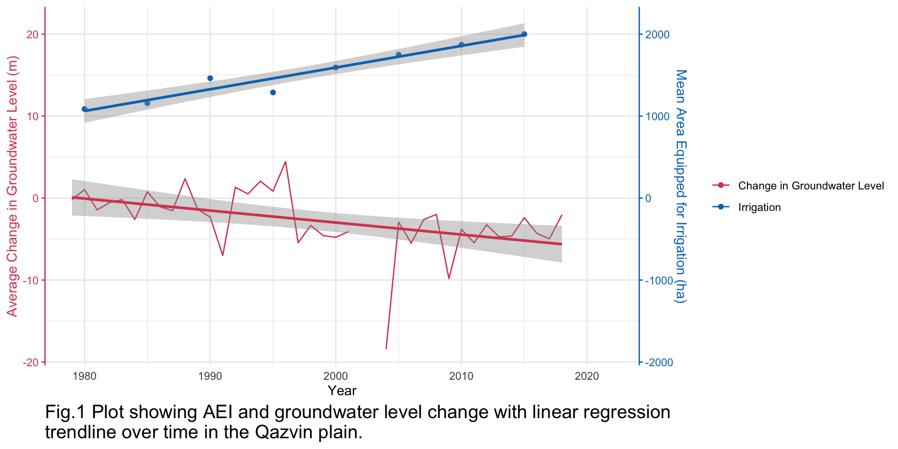
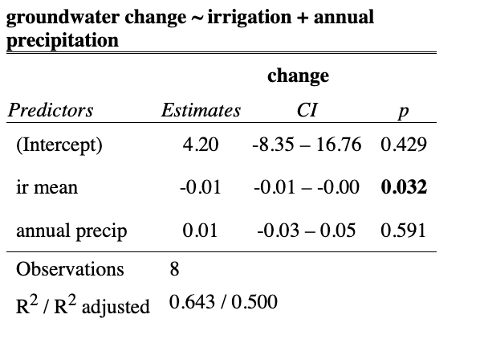
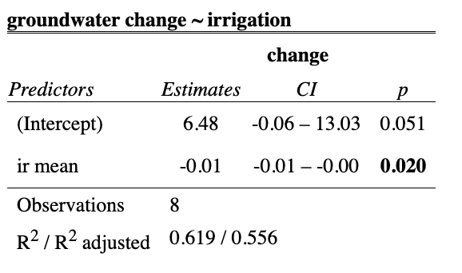
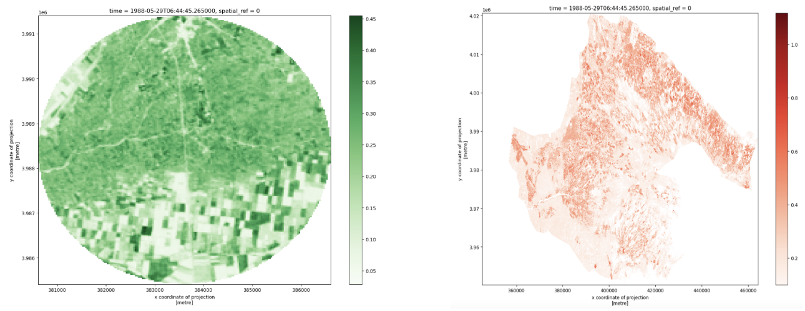
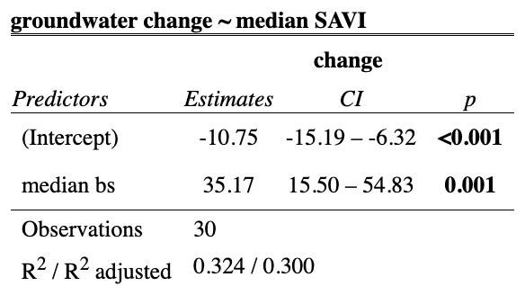

Code
ir_gw_plot
Luna Herschenfeld-Catalán
December 14, 2023
REPOSITORY: To find full analysis click this repo!
Groundwater supplies water resources for drinking water and irrigated agriculture for millions of people around the world. Groundwater levels are declining around the world. This is partly do to changing climatic trends, where declines in precipitation is leading to declines in recharge of groundwater storage in aquifers. Over the last couple of decades, agriculture production in many areas has also increased (James & Elfers, 2015). In arid regions, agriculture is mainly fed by groundwater since there is not enough surface water available, or it does not rain enough.
In the last 40 years, groundwater level declines in the Qazvin Plain of Iran have accelerated. Past research has indicated that agricultural production and population growth have contributed to over abstraction (Babaee et al., 2020)
This analysis can help guide groundwater management strategy by shedding light on how different factors are contributing to the rapid decline, with the hope of developing effective management strategies to protect groundwater resources.
GROUNDWATER LEVEL
Groundwater level depth data was provided by Scott Jasechko’s lab. Multiple measurements were taken from 1978-2018, with 2002-2003 data missing. I used the mean values each year to calculate the change in groundwater levels from one year to the next.
ANNUAL PRECIPITATION
I focused on annual precipitation as a proxy for climatic trends in this analysis. This data was provided by CHELSA-EarthEnv (Karger, 2021).
AGRICULTURE PRODUCTION
The biggest hurtle was identifying an effective proxy for agricultural production. My first attempt was using Area Equipped for Irrigation (AEI) as a measure of groundwater level decline. This data was produced by Piyush Mehta et al. (2023) using sub-national irrigation statistics that were aggregated to 5-year periods to develop a gridded map at 5 arc-min resolution of area equipped for irrigation. I used data from 1985-2015, and accessed them here: Zenodo.
However, I was unhappy with the coarseness of this dataset so I turned to Soil Adjusted Vegetation Index (SAVI)1 measurements over time to calculate a change in agricultural area from 1984-2019. I accessed this data in Python from the Microsoft Planetary Computer. My Python workbook is stored as agriculture_landsat.ipynb in the repository for this post, where you can access the code I used to calculate the SAVI statistics using Landsat images.
I clipped both data sets with a shapefile of the Qazvin Aquifer that I created in ArcGIS using a map from Mirhashemi & Mirzaei (2021) The image and the shapefile can be accessed in this project repository saved as qazvin.
I wanted to compare the yearly change in groundwater level, precipitation, and agricultural production in the Qazvin plain. To to this I first had to clean the depth to groundwater data so that I could work with the yearly mean measurement. I accessed the year with separate_wider_delim() and then used the group_by() and summarize() functions to generate a yearly mean depth to groundwater. However, I was interested in the change, so I used a first difference estimator to calculate the change in groundwater depth each year.
I also only wanted to use the AEI over the Qazvin Plain, so I used crop() to clip the AEI raster stack with the Qazvin aquifer shapefile I created. Then I calculated summary statistics across each raster in the stack. I was then able to join the change in groundwater level data with the precipitation and irrigation data.
I conducted an OLS multiple linear regression with lm() to look at how AEI and precipitation impacted the change in groundwater level. The results of the OLS regression are shown in Figure XYZ. I used ggplot() to create a scatter plot of the mean AEI and groundwater level change over time. Then I used geom_smooth() to plot a linear regression to see how these variables changed over time. The groundwater change slope is negative, and the AEI slope is positive.
The result of the multiple linear regression model are in Table 1, and they indicate that for every 1 ha increase in AEI, there is a 0.01 m decrease in groundwater level. The effect of AEI has a p-value of 0.032, which is small enough that there is statistical significance of this analysis. However, the p-value for annual precipitation is 0.591, meaning that there can be no statistical significance taken from the role of precipitation on groundwater level change. This model had an R^2 value of 0.50 which means it explained 50% of the variation in groundwater level change.


Then I ran a simple linear regression model to see the effect of just AEI mean. The results in Table 2 show that the p-value is 0.02, which increases our confidence level that AEI mean is statistically significant. Here, the R^2 value has increased to 0.56, which means this model explains 56% of the variation in groundwater level change. Given the higher R^2 value, this model is more useful than the one that includes precipitation.

I was unhappy with the temporal resolution of the irrigation data, since it was an aggregate in 5-year chunks that was already accessing data samples. To have more confidence in my results, I calculated the SAVI from the area of a buffer around the well being used to to collect the groundwater level data, and across the aquifer in Python. Then I extracted summary statistics from each raster.
I fit a linear regression model to the data as seen in Figure 3. This graph indicates that over time the median index value around the groundwater well was decreasing. Since the scale is from 0-1, the table results make more snese when you divide by 10. Reading it that way, for every 0.1 increase in the SAVI index, groundwater levels. The results of the quadratic regression are shown in Table 3, and show a statistically significant effect (p-value of 0.001) of the median SAVI in the buffer on the groundwater levels. Furthermore, the R^2 value is 0.30, which means this model accounts for 30% of the variation in groundwater level change.

HYPOTHESIS TESTING
Due to the statistical significance of the median soil adjusted vegetation index and the non-statistical significance of the annual precipitation, we fail to accept the null hypothesis.
Null Hypothesis: In the Qazvin Plain, there is no difference of the impact of annual precipitaion and agricultural production changes on groundwater level changes from 1984-2019.
Alternative Hypothesis: In the Qazvin Plain, there is a difference of the impact of annual precipitation and agricultural production on groundwater level changes from 1984-2019.
CONFIDENCE INTERVAL
I calculated a confidence interval and am 95% confident that the true change in groundwater level for every 0.1 increase in the median SAVI, is within the range of 1.6 and 5.5m.
This analysis showed that agricultural production (using area equipped for irrigation (AEI) and soil adjusted vegetation index (SAVI) as proxy) had a greater impact on groundwater level changes in the Qazvin Plain aquifer than precipitation.
IMPORTANT LIMITATIONS
In this analysis, I was only able to calculate the relationship between median SAVI and groundwater level change. The positive relationship between these variables is surprising, since I expected that an increase in SAVI would lead to greater negative groundwater change. My analysis does not take into account a possible lag in the effect of groundwater-fed irrigation on crop production (which influences SAVI values) and groundwater level changes. This relationship may also be explained by a possible quadratic fit for the median SAVI values over time. Around the early 2000’s, the median SAVI values begin to show an upward trend. This is supported by the literature that indicates that agriculture activities have become more expansive. Given more time I would have liked to explore this potential trend.
Furthermore, I used available literature to decide on the month that I would select to investigate the soil adjusted vegetation index. I selected the month when a majority of the crops were going to be harvested, as I assumed that it would be the best measure of amount of agricultural production. A more specific measure would involve analyzing landsat images over the whole year, over time, to see what the reflectance values for that specific area were, and how those values correlated with crop production on the ground. I was unable to conduct that land classification.
ANALYSIS OF GROUNDWATER DECLINES
In a future analysis I would like to collect depth to groundwater data for multiple wells over time, and see if there is a spatial relationship with changes in agriculture over that same time period (eg. shifting crop types, expansion or decline of area cultivated, irrigation system). Ideally, I could group these aquifers into climate types (eg. arid) so that any relationships could be understood within the type of climate that the aquifer is in. This would provide insight into the mechanisms of groundwater decline and a roadmap to uncover groundwater management strategies in areas where there is either no groundater decline or levels are in recovery.
It would also be interesting to obtain more data on groundwater level from wells around different aquifers and use Kriging to identify the spatial correlation between groundwater levels and different land cover types around the aquifer. Identifying how different land-cover types impact groundwater can be important considerations for future development.
Data can be accessed from the sources described in the Data Sources section of this blog. The grondwater level time series data is not publicly available.
Babaee, S., Mousavi, Z., Masoumi, Z., Malekshah, A. H., Roostaei, M., & Aflaki, M. (2020). Land subsidence from interferometric SAR and groundwater patterns in the Qazvin plain, Iran. International Journal of Remote Sensing, 41(12), 4780-4798.
James, I., & Elfers, S. (2015). Pumped Dry: The global crisis of vanishing groundwater. Pulitzer Center. https://pulitzercenter.org/projects/pumped-dry-global-crisis-vanishing-groundwater.
Karger, D.N., Wilson, A.M., Mahony, C. et al. (2021). Global daily 1 km land surface precipitation based on cloud cover-informed downscaling. Sci Data 8, 307. https://doi.org/10.1038/s41597-021-01084-6
Mehta, P., Siebert, S., Kummu, M., Deng, Q., Ali, T., Marston, L., Xie, W., & Davis, K. (2023). Global Area Equipped for Irrigation Dataset 1900-2015 (Version 3) [Data set]. Zenodo. https://doi.org/10.5281/zenodo.7809342
Mirhashemi, S. H., & Mirzaei, F. (2021). Extracting association rules from changes in aquifer drawdown in irrigation areas of Qazvin plain, Iran. Groundwater for Sustainable Development, 12, 100495.
I used NDVI initially but realized that there was very sparse vegetation in the area and so I would want to account for the soil reflectance.↩︎
@online{herschenfeld-catalán2023,
author = {Herschenfeld-Catalán, Luna},
title = {Climatic {Trends} and {Agriculture} {Expansion} on
{Declining} {Water} {Levels} in {Arid} {Aquifer,} {Iran}},
date = {2023-12-14},
url = {https://lunacatalan.github.io/blog/2023-12-decline-groundwater/index.html},
langid = {en}
}